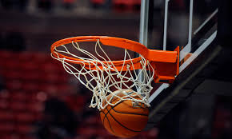

저의 취미는
농구
입니다.
때는 2017년, 즐겨했던 탁구도 이제는 질릴 즈음
체육시간에 농구를 처음 접했습니다
드리블, 레이업 수행평가를 거치며
농구에 대한 재미를 처음으로 느꼈습니다.
그 때부터 쭉 제게 점심시간은 농구를 위한 것이 되었습니다
농구를 처음 접하고 이젠 3년, 햇수에 비해 실력은 아직
많이 늘진 않았지만 그래도 농구는 여전히 재밌네요
농구는
지속적으로 뛰는 운동이기 때문에
지구력, 순발력, 민첩성 등이 자연스럽게 길러집니다
또한 다수의 사람들과 함께하는 운동이므로
친목을 다지고 협력하는 방법을 배울 수 있습니다
더불어 성장판을 자극하여 신장 증가에 도움을 주고
판단력과 두뇌 발달에도 효과가 있습니다
농구를 두려워하지말고 꼭 시도해보세요!
